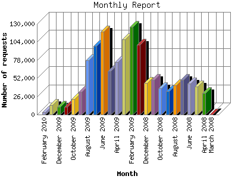

Analog 5.1
Analog 5.1 Report Magic 2.21
Report Magic 2.21The Monthly Report identifies activity for each month in the report
time frame. Remember that each page hit can result in several server requests
as the images for each page are loaded.
Note: Depending on the
report time frame, the first and last months may not represent a complete
month's worth of data, resulting in lower hits.

| Month | Number of requests | Number of page requests | |
|---|---|---|---|
| 1. | March 2008 | 279 | 62 |
| 2. | April 2008 | 30,895 | 5,794 |
| 3. | May 2008 | 40,095 | 7,391 |
| 4. | June 2008 | 44,162 | 7,706 |
| 5. | July 2008 | 49,888 | 8,440 |
| 6. | August 2008 | 41,596 | 7,178 |
| 7. | September 2008 | 33,676 | 5,578 |
| 8. | October 2008 | 37,655 | 6,314 |
| 9. | November 2008 | 49,888 | 6,889 |
| 10. | December 2008 | 45,625 | 3,648 |
| 11. | January 2009 | 99,817 | 32 |
| 12. | February 2009 | 125,808 | 33 |
| 13. | March 2009 | 107,423 | 21 |
| 14. | April 2009 | 75,670 | 22 |
| 15. | May 2009 | 62,551 | 17 |
| 16. | June 2009 | 119,279 | 25 |
| 17. | July 2009 | 98,037 | 117 |
| 18. | August 2009 | 78,194 | 54 |
| 19. | September 2009 | 32,511 | 29 |
| 20. | October 2009 | 22,203 | 40 |
| 21. | November 2009 | 11,276 | 12 |
| 22. | December 2009 | 11,235 | 23 |
| 23. | January 2010 | 13,763 | 26 |
| 24. | February 2010 | 3,580 | 6 |
Most active month July 2008 : 8,440 pages sent. 125,808 requests handled.
Monthly average: 2,477 pages sent. 51,462 requests handled.
This report was generated on February 14, 2010 21:18.
Report time frame March 31, 2008 17:55 to February 8, 2010 14:19.
| Web statistics report produced by: | |
| Analog 5.1 | Report Magic 2.21 |